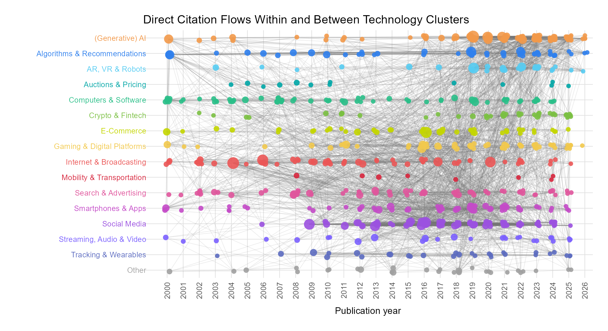
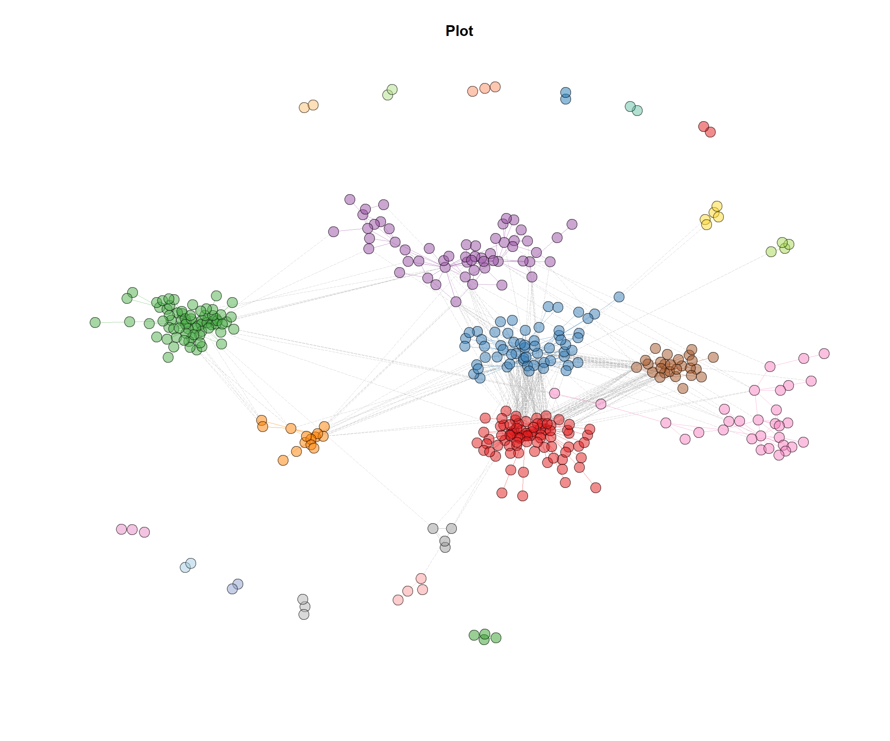
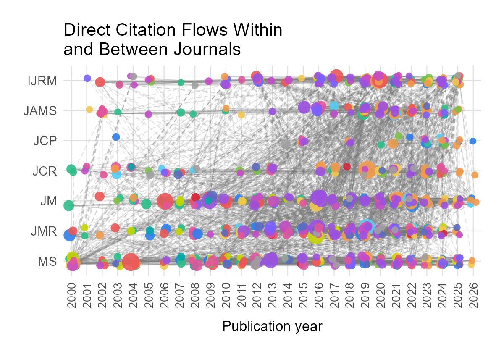

Appendix C. Supplementary Analyses to Analysis 2
Introduction
- This appendix documents how the corpus of consumer-technology research relates to itself and to the wider body of literature it draws on.
- The corpus is the deduplicated set of academic articles used throughout the paper, each assigned to one of the 16 technology clusters.
- Three perspectives are reported, each answering a different question about the same corpus:
- Internal connectedness — does the corpus build on itself? Which technology clusters cite which other technology clusters, measured on direct citation links between articles inside the corpus.
- Shared knowledge foundation — which references does the corpus build on in common? Measured on co-citation, that is, references that corpus articles cite together, described both by the co-citation clusters themselves and by the Scopus classification of the cited sources.
- Bibliographic coupling — a more fine-grained view on the same question: which technology clusters draw on overlapping reference lists, measured on the number of references that pairs of corpus articles share.
- All three perspectives use the same technology cluster assignment, so the 16 clusters are directly comparable across sections.
- A fourth section reports the same citation network by journal rather than by technology cluster: which journals cite which.
Internal Connectedness
Method
- Direct citation links were extracted with
histNetwork()from thebibliometrixpackage, restricted to the 743 corpus articles, so that only citations from one corpus article to another corpus article are counted. - The network runs on one record per article, so an article is a single node regardless of how many technologies it names.
- Cluster membership is assigned afterwards and kept multiple: an article naming technologies from several clusters belongs to each of them, and a tie between two such articles counts once per cluster pair it spans.
- Every citation link was labelled with the technology cluster of the citing article and the technology cluster of the cited article.
- Links were aggregated to the cluster level in both directions, giving two directed 16 × 16 grids:
- cites — how many citations the row cluster makes to the column cluster.
- cited by — how many citations the row cluster receives from the column cluster.
- The diagonal reports citations within the row cluster itself.
- Each cell carries a raw count, the cross-citation share \(CC_{ij}\) of row cluster \(i\) with column cluster \(j\), and the ratio \(r_{ij}\).
- In the cites grid, \(CC_{ij}\) divides the cell by all citations the row cluster makes within the corpus: how its outgoing attention is distributed.
- In the cited-by grid, \(CC_{ij}\) divides the cell by all citations the row cluster receives within the corpus: where its incoming attention comes from.
- Rows sum to 100% in both grids, so \(CC_{ij}\) describes a cluster’s profile rather than its volume, and clusters of different size stay comparable.
- \(\overline{CC}_j = \frac{1}{15}\sum_{i \neq j} CC_{ij}\), the average share the other clusters record for that same column cluster. eq j} CC_{ij}$, the average share the other clusters record for that same column cluster.
- The average is taken over the fifteen other rows, excluding the column cluster’s own row, so a cluster’s internal citation does not set its own reference point.
- \(r_{ij} = CC_{ij} / \overline{CC}_j\), so 1 = the usual amount of attention for that counterpart, 2 = twice as much, 0.5 = half.
- On the diagonal, \(r_{ii}\) states how much more of its attention a cluster keeps internally than the other clusters direct at it.
- \(CC_{ij}\) is read along a row, not down a column; the two grids are not transposes of one another, because they carry different denominators.
- Code:
30_academic_foundation/07_citation_network.R; output:cites_by_table.csv/.mdandcited_by_table.csv/.md.
Results
- Figure 1 shows the direct citation network of the corpus, with articles coloured by technology cluster and edges running from citing to cited article.

- Table 1 and Table 2 quantify the same structure as counts, \(CC_{ij}\) and \(r_{ij}\).
- Rows and columns are labelled with the technology cluster name.
- Reading a row of Table 1 gives how one technology cluster spreads its citations, reading the same row of Table 2 gives where its citations come from.
- Comparing the two tables cell by cell gives the direction of the relationship between two clusters.
- The diagonal \(CC_{ii}\) states how much of a cluster’s citing, and of its being cited, stays inside the cluster.
| Technology Cluster | Algorithms & Recommendations | AR, VR & Robots | Auctions & Pricing | Computers & Software | Crypto & Fintech | E-Commerce | Gaming & Digital Platforms | (Generative) AI | Internet & Broadcasting | Mobility & Transportation | Search & Advertising | Smartphones & Apps | Social Media | Streaming, Audio & Video | Tracking & Wearables | Other | Average excl. own cluster |
|---|---|---|---|---|---|---|---|---|---|---|---|---|---|---|---|---|---|
| Algorithms & Recommendations | 186(40.8%, 10.44) | 19(4.2%, 1.91)1 | 5(1.1%, 2.43) | 22(4.8%, 0.98)2 | 9(2%, 0.87) | 11(2.4%, 0.55) | 8(1.8%, 0.37)2 | 90(19.7%, 2.7)1 | 17(3.7%, 0.46)2 | 2(0.4%, 1) | 30(6.6%, 1.27) | 8(1.8%, 0.3)2 | 33(7.2%, 0.87) | 4(0.9%, 0.36) | 7(1.5%, 0.82) | 5(1.1%, 0.44)2 | 3.9% |
| AR, VR & Robots | 18(5.1%, 1.31) | 113(31.9%, 14.5)2 | 0(0%, 0)2 | 14(4%, 0.82)2 | 6(1.7%, 0.74)2 | 17(4.8%, 1.11) | 7(2%, 0.41)2 | 78(22%, 3.01)1 | 16(4.5%, 0.56)2 | 1(0.3%, 0.75) | 11(3.1%, 0.6) | 15(4.2%, 0.71) | 40(11.3%, 1.36)1 | 7(2%, 0.8) | 3(0.8%, 0.44)2 | 8(2.3%, 0.92) | 4.5% |
| Auctions & Pricing | 3(4.9%, 1.25) | 0(0%, 0) | 35(57.4%, 126.62)1 | 0(0%, 0)2 | 8(13.1%, 5.7)1 | 1(1.6%, 0.37) | 0(0%, 0) | 2(3.3%, 0.45) | 3(4.9%, 0.62) | 0(0%, 0) | 3(4.9%, 0.95) | 2(3.3%, 0.56) | 2(3.3%, 0.4) | 0(0%, 0) | 0(0%, 0) | 2(3.3%, 1.32) | 2.8% |
| Computers & Software | 15(3.3%, 0.84) | 12(2.6%, 1.18)1 | 1(0.2%, 0.44)2 | 180(39.4%, 8.05) | 3(0.7%, 0.3)2 | 15(3.3%, 0.76) | 21(4.6%, 0.95) | 57(12.5%, 1.71)1 | 38(8.3%, 1.04)2 | 1(0.2%, 0.5)2 | 9(2%, 0.39)2 | 51(11.2%, 1.89)1 | 17(3.7%, 0.45) | 9(2%, 0.8) | 8(1.8%, 0.99) | 20(4.4%, 1.76) | 4.1% |
| Crypto & Fintech | 8(2.5%, 0.64) | 8(2.5%, 1.14) | 2(0.6%, 1.32) | 9(2.8%, 0.57)2 | 138(42.7%, 18.57) | 9(2.8%, 0.65) | 30(9.3%, 1.91)1 | 26(8%, 1.1) | 17(5.3%, 0.67) | 3(0.9%, 2.25) | 14(4.3%, 0.83) | 11(3.4%, 0.57) | 31(9.6%, 1.16)1 | 9(2.8%, 1.11) | 6(1.9%, 1.04) | 2(0.6%, 0.24)2 | 3.8% |
| E-Commerce | 27(7.7%, 1.97)1 | 3(0.9%, 0.41) | 5(1.4%, 3.09) | 22(6.3%, 1.29)2 | 5(1.4%, 0.61)2 | 100(28.6%, 6.61)2 | 19(5.4%, 1.11) | 19(5.4%, 0.74) | 49(14%, 1.76) | 0(0%, 0)2 | 27(7.7%, 1.49) | 22(6.3%, 1.06) | 33(9.4%, 1.14)1 | 6(1.7%, 0.68) | 7(2%, 1.09) | 6(1.7%, 0.68)2 | 4.8% |
| Gaming & Digital Platforms | 18(3.6%, 0.92) | 8(1.6%, 0.73) | 2(0.4%, 0.88)2 | 33(6.5%, 1.33) | 9(1.8%, 0.78)2 | 37(7.3%, 1.69)1 | 162(32.1%, 6.6)2 | 16(3.2%, 0.44)2 | 38(7.5%, 0.94) | 5(1%, 2.5) | 30(6%, 1.16) | 34(6.7%, 1.13) | 79(15.7%, 1.9)1 | 19(3.8%, 1.51)1 | 7(1.4%, 0.77)2 | 7(1.4%, 0.56)2 | 4.5% |
| (Generative) AI | 114(8.9%, 2.28)1 | 105(8.2%, 3.73)1 | 3(0.2%, 0.44)2 | 65(5.1%, 1.04)2 | 13(1%, 0.43)2 | 32(2.5%, 0.58)2 | 37(2.9%, 0.6)2 | 550(43.1%, 5.9)1 | 74(5.8%, 0.73) | 3(0.2%, 0.5)2 | 54(4.2%, 0.81) | 53(4.2%, 0.71)2 | 107(8.4%, 1.01)1 | 21(1.6%, 0.64) | 28(2.2%, 1.2) | 16(1.3%, 0.52)2 | 3.8% |
| Internet & Broadcasting | 24(4.8%, 1.23) | 8(1.6%, 0.73) | 3(0.6%, 1.32)2 | 38(7.6%, 1.55)2 | 9(1.8%, 0.78) | 31(6.2%, 1.43) | 31(6.2%, 1.27)1 | 28(5.6%, 0.77) | 189(37.9%, 4.76) | 4(0.8%, 2) | 30(6%, 1.16) | 23(4.6%, 0.78)2 | 36(7.2%, 0.87)1 | 23(4.6%, 1.83)1 | 7(1.4%, 0.77) | 15(3%, 1.2) | 4.1% |
| Mobility & Transportation | 1(1.6%, 0.41) | 0(0%, 0) | 0(0%, 0) | 3(4.8%, 0.98) | 2(3.2%, 1.39) | 7(11.3%, 2.61)1 | 7(11.3%, 2.32)1 | 2(3.2%, 0.44) | 5(8.1%, 1.02) | 24(38.7%, 96.75) | 1(1.6%, 0.31) | 5(8.1%, 1.37) | 0(0%, 0)2 | 2(3.2%, 1.27) | 0(0%, 0) | 3(4.8%, 1.91) | 4.1% |
| Search & Advertising | 17(4.5%, 1.15) | 4(1%, 0.45) | 4(1%, 2.21) | 15(3.9%, 0.8)2 | 5(1.3%, 0.57)2 | 16(4.2%, 0.97) | 21(5.5%, 1.13) | 17(4.5%, 0.62) | 43(11.3%, 1.42) | 1(0.3%, 0.75)2 | 134(35.1%, 6.78) | 27(7.1%, 1.2) | 49(12.8%, 1.55)1 | 16(4.2%, 1.67)1 | 8(2.1%, 1.15) | 5(1.3%, 0.52)2 | 4.3% |
| Smartphones & Apps | 13(2.1%, 0.54) | 6(1%, 0.45) | 3(0.5%, 1.1)2 | 57(9.3%, 1.9) | 6(1%, 0.43)2 | 24(3.9%, 0.9) | 29(4.7%, 0.97) | 28(4.5%, 0.62) | 57(9.3%, 1.17) | 3(0.5%, 1.25) | 37(6%, 1.16) | 244(39.6%, 6.69) | 54(8.8%, 1.06)1 | 9(1.5%, 0.6) | 18(2.9%, 1.59) | 28(4.5%, 1.8) | 4% |
| Social Media | 27(2.6%, 0.67) | 16(1.5%, 0.68) | 1(0.1%, 0.22)2 | 29(2.8%, 0.57)2 | 12(1.1%, 0.48)2 | 42(4%, 0.92) | 69(6.6%, 1.36)1 | 32(3%, 0.41) | 80(7.6%, 0.95) | 3(0.3%, 0.75)2 | 67(6.4%, 1.24)1 | 46(4.4%, 0.74) | 549(52.3%, 6.32)1 | 43(4.1%, 1.63)1 | 16(1.5%, 0.82) | 18(1.7%, 0.68)2 | 3.2% |
| Streaming, Audio & Video | 7(2.4%, 0.61) | 4(1.4%, 0.64) | 1(0.3%, 0.66)2 | 13(4.5%, 0.92)2 | 7(2.4%, 1.04) | 13(4.5%, 1.04) | 21(7.3%, 1.5)1 | 12(4.2%, 0.58) | 47(16.4%, 2.06)1 | 1(0.3%, 0.75) | 15(5.2%, 1) | 14(4.9%, 0.83) | 36(12.5%, 1.51)1 | 79(27.5%, 10.94)2 | 12(4.2%, 2.3) | 5(1.7%, 0.68)2 | 4.8% |
| Tracking & Wearables | 5(2.5%, 0.64) | 3(1.5%, 0.68) | 0(0%, 0)2 | 7(3.5%, 0.72)2 | 4(2%, 0.87) | 3(1.5%, 0.35) | 5(2.5%, 0.51) | 11(5.4%, 0.74) | 9(4.5%, 0.56) | 0(0%, 0)2 | 16(7.9%, 1.53)1 | 20(9.9%, 1.67)1 | 13(6.4%, 0.77) | 4(2%, 0.8) | 93(46%, 25.18)1 | 9(4.5%, 1.8) | 3.6% |
| Other | 5(2.1%, 0.54) | 12(5%, 2.27)1 | 1(0.4%, 0.88)2 | 18(7.5%, 1.53) | 0(0%, 0)2 | 11(4.6%, 1.06) | 7(2.9%, 0.6) | 12(5%, 0.68) | 20(8.3%, 1.04) | 2(0.8%, 2) | 14(5.8%, 1.12) | 21(8.7%, 1.47) | 19(7.9%, 0.95) | 8(3.3%, 1.31) | 9(3.7%, 2.03) | 82(34%, 13.56) | 4.4% |
| Technology Cluster | Algorithms & Recommendations | AR, VR & Robots | Auctions & Pricing | Computers & Software | Crypto & Fintech | E-Commerce | Gaming & Digital Platforms | (Generative) AI | Internet & Broadcasting | Mobility & Transportation | Search & Advertising | Smartphones & Apps | Social Media | Streaming, Audio & Video | Tracking & Wearables | Other | Average excl. own cluster |
|---|---|---|---|---|---|---|---|---|---|---|---|---|---|---|---|---|---|
| Algorithms & Recommendations | 186(38.1%, 9.72) | 18(3.7%, 1.29) | 3(0.6%, 1.3) | 15(3.1%, 0.79) | 8(1.6%, 0.56)2 | 27(5.5%, 1.54)1 | 18(3.7%, 0.71)2 | 114(23.4%, 2.09)1 | 24(4.9%, 0.92)1 | 1(0.2%, 0.33)2 | 17(3.5%, 0.95) | 13(2.7%, 0.46)2 | 27(5.5%, 0.68) | 7(1.4%, 0.48)2 | 5(1%, 0.67)2 | 5(1%, 0.41)2 | 4.1% |
| AR, VR & Robots | 19(5.9%, 1.51) | 113(35.2%, 12.28) | 0(0%, 0)2 | 12(3.7%, 0.94) | 8(2.5%, 0.88)2 | 3(0.9%, 0.25) | 8(2.5%, 0.48)2 | 105(32.7%, 2.92)1 | 8(2.5%, 0.47) | 0(0%, 0)2 | 4(1.2%, 0.33)2 | 6(1.9%, 0.32)2 | 16(5%, 0.62) | 4(1.2%, 0.42)2 | 3(0.9%, 0.6)2 | 12(3.7%, 1.5) | 4.3% |
| Auctions & Pricing | 5(7.6%, 1.94) | 0(0%, 0) | 35(53%, 115.22)1 | 1(1.5%, 0.38) | 2(3%, 1.05) | 5(7.6%, 2.13)1 | 2(3%, 0.58) | 3(4.5%, 0.4) | 3(4.5%, 0.84) | 0(0%, 0) | 4(6.1%, 1.66) | 3(4.5%, 0.77) | 1(1.5%, 0.18) | 1(1.5%, 0.52) | 0(0%, 0) | 1(1.5%, 0.61) | 3.1% |
| Computers & Software | 22(4.2%, 1.07) | 14(2.7%, 0.94) | 0(0%, 0)2 | 180(34.3%, 8.75)2 | 9(1.7%, 0.6)2 | 22(4.2%, 1.18) | 33(6.3%, 1.21) | 65(12.4%, 1.11) | 38(7.2%, 1.35)1 | 3(0.6%, 1) | 15(2.9%, 0.79) | 57(10.9%, 1.86)1 | 29(5.5%, 0.68)2 | 13(2.5%, 0.87) | 7(1.3%, 0.87)2 | 18(3.4%, 1.38) | 4.4% |
| Crypto & Fintech | 9(3.8%, 0.97) | 6(2.5%, 0.87) | 8(3.4%, 7.39)1 | 3(1.3%, 0.33) | 138(58.5%, 20.55)1 | 5(2.1%, 0.59) | 9(3.8%, 0.73) | 13(5.5%, 0.49)2 | 9(3.8%, 0.71)1 | 2(0.8%, 1.33) | 5(2.1%, 0.57) | 6(2.5%, 0.43) | 12(5.1%, 0.63) | 7(3%, 1.04) | 4(1.7%, 1.13) | 0(0%, 0)2 | 2.8% |
| E-Commerce | 11(3%, 0.77) | 17(4.6%, 1.6) | 1(0.3%, 0.65) | 15(4.1%, 1.05) | 9(2.4%, 0.84)2 | 100(27.1%, 7.61)2 | 37(10%, 1.92)1 | 32(8.7%, 0.78)2 | 31(8.4%, 1.58)1 | 7(1.9%, 3.17) | 16(4.3%, 1.17) | 24(6.5%, 1.11) | 42(11.4%, 1.41) | 13(3.5%, 1.21) | 3(0.8%, 0.53)2 | 11(3%, 1.22) | 4.9% |
| Gaming & Digital Platforms | 8(1.7%, 0.43)2 | 7(1.5%, 0.52)2 | 0(0%, 0)2 | 21(4.4%, 1.12) | 30(6.3%, 2.21) | 19(4%, 1.12) | 162(34.2%, 6.57)2 | 37(7.8%, 0.7)2 | 31(6.5%, 1.22)1 | 7(1.5%, 2.5) | 21(4.4%, 1.2) | 29(6.1%, 1.04) | 69(14.6%, 1.8)1 | 21(4.4%, 1.52) | 5(1.1%, 0.73)2 | 7(1.5%, 0.61)2 | 4.4% |
| (Generative) AI | 90(9.2%, 2.35)1 | 78(8%, 2.79)1 | 2(0.2%, 0.43) | 57(5.8%, 1.48)1 | 26(2.7%, 0.95)2 | 19(1.9%, 0.53) | 16(1.6%, 0.31)2 | 550(56.1%, 5.01)1 | 28(2.9%, 0.54)1 | 2(0.2%, 0.33)2 | 17(1.7%, 0.46)2 | 28(2.9%, 0.5) | 32(3.3%, 0.41)2 | 12(1.2%, 0.42)2 | 11(1.1%, 0.73)2 | 12(1.2%, 0.49)2 | 2.9% |
| Internet & Broadcasting | 17(2.4%, 0.61)2 | 16(2.3%, 0.8) | 3(0.4%, 0.87) | 38(5.4%, 1.38) | 17(2.4%, 0.84)2 | 49(7%, 1.97)1 | 38(5.4%, 1.04) | 74(10.5%, 0.94) | 189(26.9%, 5.04)2 | 5(0.7%, 1.17) | 43(6.1%, 1.66)1 | 57(8.1%, 1.39)1 | 80(11.4%, 1.41)1 | 47(6.7%, 2.32)1 | 9(1.3%, 0.87)2 | 20(2.8%, 1.14) | 4.9% |
| Mobility & Transportation | 2(3.8%, 0.97) | 1(1.9%, 0.66) | 0(0%, 0) | 1(1.9%, 0.48) | 3(5.7%, 2) | 0(0%, 0) | 5(9.4%, 1.81) | 3(5.7%, 0.51) | 4(7.5%, 1.41) | 24(45.3%, 75.5) | 1(1.9%, 0.52) | 3(5.7%, 0.97) | 3(5.7%, 0.7) | 1(1.9%, 0.66) | 0(0%, 0) | 2(3.8%, 1.54) | 3.7% |
| Search & Advertising | 30(6.1%, 1.56) | 11(2.2%, 0.77) | 3(0.6%, 1.3) | 9(1.8%, 0.46)2 | 14(2.8%, 0.98)2 | 27(5.5%, 1.54)1 | 30(6.1%, 1.17) | 54(11%, 0.98)2 | 30(6.1%, 1.14)1 | 1(0.2%, 0.33)2 | 134(27.2%, 7.4)2 | 37(7.5%, 1.28) | 67(13.6%, 1.68)1 | 15(3%, 1.04) | 16(3.3%, 2.2) | 14(2.8%, 1.14) | 4.8% |
| Smartphones & Apps | 8(1.3%, 0.33)2 | 15(2.5%, 0.87) | 2(0.3%, 0.65) | 51(8.6%, 2.19)1 | 11(1.8%, 0.63)2 | 22(3.7%, 1.04) | 34(5.7%, 1.09) | 53(8.9%, 0.79)2 | 23(3.9%, 0.73) | 5(0.8%, 1.33) | 27(4.5%, 1.23) | 244(40.9%, 7) | 46(7.7%, 0.95) | 14(2.3%, 0.8) | 20(3.4%, 2.27) | 21(3.5%, 1.42) | 3.9% |
| Social Media | 33(3%, 0.77) | 40(3.6%, 1.26) | 2(0.2%, 0.43) | 17(1.5%, 0.38)2 | 31(2.8%, 0.98)2 | 33(3%, 0.84) | 79(7.2%, 1.38)1 | 107(9.7%, 0.87) | 36(3.3%, 0.62)1 | 0(0%, 0)2 | 49(4.5%, 1.23)1 | 54(4.9%, 0.84) | 549(50%, 6.16)1 | 36(3.3%, 1.14) | 13(1.2%, 0.8)2 | 19(1.7%, 0.69) | 3.3% |
| Streaming, Audio & Video | 4(1.5%, 0.38)2 | 7(2.7%, 0.94) | 0(0%, 0)2 | 9(3.5%, 0.89) | 9(3.5%, 1.23) | 6(2.3%, 0.65) | 19(7.3%, 1.4) | 21(8.1%, 0.72)2 | 23(8.9%, 1.67)1 | 2(0.8%, 1.33) | 16(6.2%, 1.69) | 9(3.5%, 0.6) | 43(16.6%, 2.05)1 | 79(30.5%, 10.57)2 | 4(1.5%, 1) | 8(3.1%, 1.26) | 4.6% |
| Tracking & Wearables | 7(3.1%, 0.79) | 3(1.3%, 0.45) | 0(0%, 0)2 | 8(3.5%, 0.89) | 6(2.6%, 0.91) | 7(3.1%, 0.87) | 7(3.1%, 0.6) | 28(12.2%, 1.09) | 7(3.1%, 0.58) | 0(0%, 0)2 | 8(3.5%, 0.95) | 18(7.9%, 1.35)1 | 16(7%, 0.86) | 12(5.2%, 1.8) | 93(40.6%, 27.07) | 9(3.9%, 1.59) | 4% |
| Other | 5(2.2%, 0.56) | 8(3.5%, 1.22) | 2(0.9%, 1.96) | 20(8.7%, 2.22)1 | 2(0.9%, 0.32)2 | 6(2.6%, 0.73) | 7(3%, 0.58)2 | 16(6.9%, 0.62)2 | 15(6.5%, 1.22)1 | 3(1.3%, 2.17) | 5(2.2%, 0.6) | 28(12.1%, 2.07)1 | 18(7.8%, 0.96) | 5(2.2%, 0.76) | 9(3.9%, 2.6) | 82(35.5%, 14.43) | 4.3% |
Co-Mention Within the Same Article
- A measure of connectedness that does not rely on citations, reported alongside the citation grids because it answers the same question from the other side.
- Unit: article. For every pair of technology clusters, the number of corpus articles that name a technology from both.
- An article mentioning several technologies of the same cluster counts once for that cluster, so the cell counts articles rather than mentions.
- The matrix is symmetric and the diagonal is empty, because a cluster cannot co-occur with itself.
- The final column sums the row and therefore counts co-occurrence links rather than articles: an article naming three clusters contributes two to each of those clusters.
- The cross-mention rate is the share of a cluster’s own articles that also mention a technology from another cluster, counting each article once, and is therefore not affected by the size of the cluster.
- Read against the citation grids above, a cluster can be strongly self-citing yet frequently co-mentioned, or the reverse, because the two measures track different behaviours.
| Technology cluster | Algorithms & Recommendations | AR, VR & Robots | Auctions & Pricing | Computers & Software | Crypto & Fintech | E-Commerce | Gaming & Digital Platforms | Generative AI | Internet & Broadcasting | Mobility & Transportation | Search & Advertising | Smartphones & Apps | Social Media | Streaming, Audio & Video | Tracking & Wearables | Other | Sum cross-mentions | Cross-mention rate |
|---|---|---|---|---|---|---|---|---|---|---|---|---|---|---|---|---|---|---|
| Algorithms & Recommendations | 2 | 1 | 3 | 1 | 5 | 1 | 8 | 2 | 0 | 2 | 1 | 1 | 0 | 0 | 0 | 27 | 27.2% | |
| AR, VR & Robots | 2 | 0 | 0 | 3 | 1 | 0 | 12 | 2 | 0 | 1 | 2 | 2 | 1 | 1 | 1 | 28 | 39.1% | |
| Auctions & Pricing | 1 | 0 | 0 | 0 | 0 | 0 | 1 | 1 | 0 | 0 | 1 | 1 | 0 | 0 | 0 | 5 | 16.7% | |
| Computers & Software | 3 | 0 | 0 | 0 | 0 | 4 | 8 | 9 | 1 | 1 | 12 | 0 | 4 | 0 | 8 | 50 | 32.2% | |
| Crypto & Fintech | 1 | 3 | 0 | 0 | 1 | 2 | 3 | 2 | 0 | 1 | 1 | 0 | 2 | 1 | 0 | 17 | 13.1% | |
| E-Commerce | 5 | 1 | 0 | 0 | 1 | 2 | 2 | 5 | 0 | 5 | 2 | 5 | 1 | 0 | 1 | 30 | 24.7% | |
| Gaming & Digital Platforms | 1 | 0 | 0 | 4 | 2 | 2 | 1 | 5 | 1 | 2 | 4 | 5 | 4 | 2 | 1 | 34 | 28.6% | |
| Generative AI | 8 | 12 | 1 | 8 | 3 | 2 | 1 | 2 | 0 | 5 | 5 | 3 | 1 | 2 | 1 | 54 | 24.3% | |
| Internet & Broadcasting | 2 | 2 | 1 | 9 | 2 | 5 | 5 | 2 | 3 | 5 | 7 | 2 | 9 | 1 | 6 | 61 | 38.1% | |
| Mobility & Transportation | 0 | 0 | 0 | 1 | 0 | 0 | 1 | 0 | 3 | 0 | 1 | 1 | 1 | 1 | 1 | 10 | 34.8% | |
| Search & Advertising | 2 | 1 | 0 | 1 | 1 | 5 | 2 | 5 | 5 | 0 | 4 | 6 | 2 | 3 | 2 | 39 | 33.0% | |
| Smartphones & Apps | 1 | 2 | 1 | 12 | 1 | 2 | 4 | 5 | 7 | 1 | 4 | 3 | 2 | 4 | 7 | 56 | 32.2% | |
| Social Media | 1 | 2 | 1 | 0 | 0 | 5 | 5 | 3 | 2 | 1 | 6 | 3 | 5 | 3 | 2 | 39 | 17.3% | |
| Streaming, Audio & Video | 0 | 1 | 0 | 4 | 2 | 1 | 4 | 1 | 9 | 1 | 2 | 2 | 5 | 0 | 3 | 35 | 41.2% | |
| Tracking & Wearables | 0 | 1 | 0 | 0 | 1 | 0 | 2 | 2 | 1 | 1 | 3 | 4 | 3 | 0 | 2 | 20 | 26.9% | |
| Other | 0 | 1 | 0 | 8 | 0 | 1 | 1 | 1 | 6 | 1 | 2 | 7 | 2 | 3 | 2 | 35 | 35.7% |
Shared Knowledge Foundation
Method
- Co-citation counts how often two references are cited together by the same corpus article, which identifies the bodies of work the corpus builds on in common, including references outside the corpus.
- Before clustering, the most cited references were screened by hand and pure method papers, that is, references concerned solely with a method and not with its application to any topic, were removed.
- The co-citation network was built with
biblioNetwork(analysis = "co-citation", network = "references")on the deduplicated corpus and drawn withnetworkPlot()using a Fruchterman-Reingold layout, the 500 most cited references, a minimum edge weight of 3, Louvain community detection, a community repulsion of 0.8, and a fixed seed. - The same network is reported from two perspectives, so the nodes and edges are identical in both and only the colouring differs:
- Louvain co-citation clusters — the communities the algorithm itself finds in the co-citation network, that is, groups of references that are habitually cited together.
- Scopus classification of the cited sources — each cited reference matched to its source journal in the Scopus source list and labelled with the 4 Scopus top-level fields and the Scopus broad subject areas of that source.
- For the second perspective, a reference was counted once per article and field, so an article citing several sources from the same field contributes once.
- In the custom rendering, each reference node is additionally coloured by the technology cluster that dominates its citing articles, using a dominance threshold of 0.25; nodes below the threshold are labelled as having no dominant cluster.
- Deviation test for the Louvain base clusters, same procedure as the journal test in Appendix B:
- Unit: matched article-reference mention; one reference belongs to exactly one base cluster.
- Counts: technology clusters (16) × base clusters; cell = mentions of that cluster in that base cluster.
- Baseline
b: overall base cluster shares across all technology clusters, column sums over the whole table. - Validity: categories mutually exclusive and exhaustive, row shares sum to 1, so the composition is proper and Dirichlet-multinomial applies.
- Prior: Dirichlet, concentration
α = b × number of base clusters, identical for every technology cluster. - Prior mean = baseline, i.e. “this cluster’s reference mix matches the corpus”.
- Prior mass = number of base clusters, the same total weight as a flat Dirichlet(1, …, 1), redistributed proportionally; as uninformative as the flat prior, shrinking small clusters toward the baseline.
- Posterior: Dirichlet-multinomial conjugacy,
Dirichlet(α + row counts). - Sampling: gamma normalization, 20,000 draws per technology cluster, each a full vector summing to 1; fixed seed.
- Deviation per draw:
d = posterior share − baseline share. - Interval: equal-tailed 95% credible interval, 2.5th and 97.5th percentile of the draws.
- Marks:
^1^interval entirely above zero,^2^entirely below, blank spans zero. - Intervals marginal per cell, no multiplicity correction.
- Not applied to the Scopus tables: an article can cite several fields, rows do not sum to 1, so the composition is not proper.
- Mentions within one article are correlated, so the effective sample size is below the mention count and the intervals are narrower than the paper-level evidence warrants.
- Code:
30_academic_foundation/06_cocitation_analysis.Rand30_academic_foundation/03_create_cluster_field_overview.R.
Results
Perspective 1: Louvain Co-Citation Clusters
- Figure 2 shows the co-citation network as produced by
bibliometrix, coloured by Louvain community. - Figure 3 shows the same network with every reference coloured by the technology cluster that dominates its citing articles.
- Placing the two side by side shows which Louvain communities of references are drawn on by which technology clusters.

bibliometrix.

- Table 4 gives the shared knowledge foundation of the corpus as a whole.
- First row pools all sixteen technology clusters, the baseline of Table 5.
- Second row names the five most cited references of each base cluster, ranked by the number of corpus articles citing them.
- Base clusters with fewer than five references in the top-reference list carry all of them.
| Co-Citation Base Cluster | algorithm and AI perception & acceptance | consumer decisionmaking | crowdfunding | customer engagement | customer management | customization | emotions | goals | herd behavior | identity and self | mental accounting | mobile apps | network effects and social contagion | product failure | product uncertainty | self-service technologies | self disclosure | social media | targeting | television advertising | word of mouth and virality | other |
|---|---|---|---|---|---|---|---|---|---|---|---|---|---|---|---|---|---|---|---|---|---|---|
| All clusters (baseline) | 818 / 4281 (19.1%) | 38 / 4281 (0.9%) | 33 / 4281 (0.8%) | 179 / 4281 (4.2%) | 649 / 4281 (15.2%) | 18 / 4281 (0.4%) | 18 / 4281 (0.4%) | 28 / 4281 (0.7%) | 17 / 4281 (0.4%) | 38 / 4281 (0.9%) | 23 / 4281 (0.5%) | 18 / 4281 (0.4%) | 262 / 4281 (6.1%) | 27 / 4281 (0.6%) | 28 / 4281 (0.7%) | 12 / 4281 (0.3%) | 49 / 4281 (1.1%) | 666 / 4281 (15.6%) | 320 / 4281 (7.5%) | 30 / 4281 (0.7%) | 1000 / 4281 (23.4%) | 10 / 4281 (0.2%) |
| Top five references | Mende et al. (2019), Service Robots Rising: How Humanoid Robots Influence Service Experiences and Elicit Compensatory Consumer Responses; Longoni et al. (2019), Resistance to Medical Artificial Intelligence; Castelo et al. (2019), Task-Dependent Algorithm Aversion; Huang & Rust (2018), Artificial Intelligence in Service; Puntoni et al. (2021), Consumers and Artificial Intelligence: An Experiential Perspective | Trope & Liberman (2010), Construal-Level Theory of Psychological Distance; Lee et al. (2010), Value from regulatory construal fit: The persuasive impact of fit between consumer goals and message concreteness; Liberman & Trope (1998), The Role of Feasibility and Desirability Considerations in Near and Distant Future Decisions: A Test of Temporal Construal Theory; Trope et al. (2007), Construal levels and psychological distance: Effects on representation, prediction, evaluation, and behavior; Higgins (2000), Making a good decision: Value from fit | Dai & Zhang (2019), Prosocial Goal Pursuit in Crowdfunding: Evidence from Kickstarter; Mollick (2014), The dynamics of crowdfunding: An exploratory study; Fan et al. (2020), The Small Predicts Large Effect in Crowdfunding; Kuppuswamy & Bayus (2017), Does my contribution to your crowdfunding project matter? | Brodie et al. (2011), Customer engagement: Conceptual domain, fundamental propositions, and implications for research; Morgan & Hunt (1994), The commitment-trust theory of relationship marketing; Kumar & Pansari (2016), Competitive advantage through engagement; Van Doorn et al. (2010), Customer engagement behavior: Theoretical foundations and research directions; Pansari & Kumar (2017), Customer engagement: the construct, antecedents, and consequences | Lemon & Verhoef (2016), Understanding customer experience throughout the customer journey; Danaher & Dagger (2013), Comparing the relative effectiveness of advertising channels: A case study of a multimedia blitz campaign; Batra & Keller (2016), Integrating marketing communications: New findings, new lessons, and new ideas; Lamberton & Stephen (2016), A thematic exploration of digital, social media, and mobile marketing: Research evolution from 2000 to 2015 and an agenda for future inquiry; Verhoef et al. (2007), Multichannel customer management: Understanding the research-shopper phenomenon | Dellaert & Stremersch (2005), Marketing mass-customized products: Striking a balance between utility and complexity; Tian et al. (2001), Consumers’ need for uniqueness: Scale development and validation | Teixeira et al. (2012), Emotion-induced engagement in Internet video advertisements; Bagozzi et al. (1999), The role of emotions in marketing | Fishbach & Dhar (2005), Goals as excuses or guides: The liberating effect of perceived goal progress on choice; Kivetz et al. (2006), The goal-gradient hypothesis resurrected: Purchase acceleration, illusionary goal progress, and customer retention; Khan & Dhar (2006), Licensing effect in consumer choice | Bikhchandani et al. (1992), A theory of fads, fashion, custom, and cultural change as informational cascades; Banerjee (1992), A simple model of herd behavior quarterly | Berger & Heath (2007), Where consumers diverge from others: Identity signaling and product domains; Belk (1988), Possessions and the extended self; Belk (2013), Extended self in a digital world | Prelec & Loewenstein (1998), The red and the black: Mental accounting of savings and debt; Thaler (1985), Mental accounting and consumer choice | Rutz et al. (2019), Measuring and forecasting mobile game app engagement; Van Heerde et al. (2019), Engaging the unengaged customer: The value of a retailer mobile app | Toubia & Stephen (2013), Intrinsic vs. image-related utility in social media: Why do people contribute content to Twitter?; Iyengar et al. (2011), Opinion leadership and social contagion in new product diffusion; Goldenberg et al. (2009), The role of hubs in the adoption process; Bass (1969), A new product growth for model consumer durables; Katona et al. (2011), Network effects and personal influences: The diffusion of an online social network | Folkes (1984), Consumer reactions to product failure: an attributional approach; Smith et al. (1999), A model of customer satisfaction with service encounters involving failure and recovery; Cleeren et al. (2013), Rising from the ashes: How brands and categories can overcome product-harm crises; Ward & Ostrom (2006), Complaining to the masses: The role of protest framing in customer-created complaint web sites | Hong & Pavlou (2014), Product fit uncertainty in online markets: Nature, effects, and antecedents; Degeratu et al. (2000), Consumer choice behavior in online and traditional supermarkets: The effects of brand name, price, and other search attributes; Danaher et al. (2003), A Comparison of Online and Offline Consumer Brand Loyalty; Dimoka et al. (2012), On product uncertainty in online markets: Theory and evidence | Meuter et al. (2005), Choosing among alternative service delivery modes: An investigation of customer trial of self-service technologies; Giebelhausen et al. (2014), Touch Versus Tech: When technology functions as a barrier or a benefit to service encounters | Melumad & Meyer (2020), Full Disclosure: How Smartphones Enhance Consumer Self-Disclosure; Grewal & Stephen (2019), In Mobile We Trust: The Effects of Mobile Versus Nonmobile Reviews on Consumer Purchase Intentions; Melumad et al. (2019), Selectively emotional: How smartphone use changes user-generated content; Ransbotham et al. (2019), Creation and consumption of mobile word of mouth: How are mobile reviews different? | Berger & Milkman (2012), What makes online content viral?; Berger et al. (2020), Uniting the Tribes: Using Text for Marketing Insight; Hewett et al. (2016), Brand buzz in the echoverse; Kumar et al. (2016), From social to sale: The effects of firm-generated content in social media on customer behavior; Stephen & Galak (2012), The effects of traditional and social earned media on sales: A study of a microlending marketplace | Goldfarb & Tucker (2011), Online display advertising: Targeting and obtrusiveness; Luo et al. (2014), Mobile targeting; Zaichkowsky (1985), Measuring the involvement construct; Petty et al. (1983), Central and peripheral routes to advertising effectiveness: the moderating role of involvement; Andrews et al. (2016), Mobile ad effectiveness: Hyper-contextual targeting with crowdedness | Wilbur (2008), A two-sided, empirical model of television advertising and viewing markets; Wilbur et al. (2013), Correcting audience externalities in television advertising; Chae et al. (2019), Wearout or Weariness? Measuring Potential Negative Consequences of Online Ad Volume and Placement on Website Visits | Chevalier & Mayzlin (2006), The effect of word of mouth on sales: Online book reviews; Godes & Mayzlin (2004), Using online conversations to study word-of-mouth communication; Berger (2014), Word of mouth and interpersonal communication: A review and directions for future research; Tirunillai & Tellis (2012), Does chatter really matter? Dynamics of user-generated content and stock performance; Liu (2006), Word of mouth for movies: Its dynamics and impact on box office revenue | Dabholkar & Bagozzi (2002), An attitudinal model of technology-based self-service: Moderating effects of consumer traits and situational factors |
- Table 5 quantifies the overlap between the two colourings.
- Rows are the 16 technology clusters, columns are the labelled Louvain base clusters, both alphabetical with the residual Other category last.
- Cells give the number of matched article-reference mentions of the technology cluster that fall into that base cluster, out of all its matched mentions, with the corresponding share.
- Rows sum to 100%, so cells describe the composition of a technology cluster’s reference base, not its size.
- Final row
All clusters (baseline)gives the pooled distribution across base clusters, the reference point for the marks. ^1^marks a share credibly above that baseline share,^2^one credibly below it, blank no credible deviation.- Marks refer to composition, not volume: a small technology cluster can be marked on modest counts.
Perspective 2: Scopus Classification of the Cited Sources
- Table 6 reports the 4 Scopus top-level fields.
- Table 7 reports the Scopus broad subject areas, which subdivide the top-level fields.
- In both tables, rows are the 16 technology clusters and cells give the number of articles in the cluster that cite at least one reference from that field, out of all articles in the cluster, with the corresponding share.
- Because an article can cite references from several fields, the shares within a row do not sum to 100%.
| Technology Cluster | Articles | Social Sciences | Physical Sciences | Life Sciences | Health Sciences |
|---|---|---|---|---|---|
| Algorithms & Recommendations | 81 | 70 / 81 (86.4%) | 65 / 81 (80.2%) | 33 / 81 (40.7%) | 24 / 81 (29.6%) |
| AR, VR & Robots | 46 | 37 / 46 (80.4%) | 36 / 46 (78.3%) | 26 / 46 (56.5%) | 21 / 46 (45.7%) |
| Auctions & Pricing | 24 | 18 / 24 (75.0%) | 16 / 24 (66.7%) | 7 / 24 (29.2%) | 1 / 24 (4.2%) |
| Computers & Software | 121 | 103 / 121 (85.1%) | 94 / 121 (77.7%) | 46 / 121 (38.0%) | 48 / 121 (39.7%) |
| Crypto & Fintech | 84 | 70 / 84 (83.3%) | 61 / 84 (72.6%) | 28 / 84 (33.3%) | 26 / 84 (31.0%) |
| E-Commerce | 77 | 62 / 77 (80.5%) | 54 / 77 (70.1%) | 14 / 77 (18.2%) | 16 / 77 (20.8%) |
| Gaming & Digital Platforms | 98 | 82 / 98 (83.7%) | 76 / 98 (77.6%) | 33 / 98 (33.7%) | 28 / 98 (28.6%) |
| Generative AI | 177 | 151 / 177 (85.3%) | 143 / 177 (80.8%) | 89 / 177 (50.3%) | 83 / 177 (46.9%) |
| Internet & Broadcasting | 113 | 88 / 113 (77.9%) | 75 / 113 (66.4%) | 19 / 113 (16.8%) | 23 / 113 (20.4%) |
| Mobility & Transportation | 23 | 17 / 23 (73.9%) | 17 / 23 (73.9%) | 6 / 23 (26.1%) | 5 / 23 (21.7%) |
| Search & Advertising | 88 | 67 / 88 (76.1%) | 62 / 88 (70.5%) | 22 / 88 (25.0%) | 22 / 88 (25.0%) |
| Smartphones & Apps | 115 | 94 / 115 (81.7%) | 86 / 115 (74.8%) | 38 / 115 (33.0%) | 42 / 115 (36.5%) |
| Social Media | 150 | 111 / 150 (74.0%) | 104 / 150 (69.3%) | 36 / 150 (24.0%) | 46 / 150 (30.7%) |
| Streaming, Audio & Video | 51 | 38 / 51 (74.5%) | 37 / 51 (72.5%) | 12 / 51 (23.5%) | 10 / 51 (19.6%) |
| Tracking & Wearables | 52 | 44 / 52 (84.6%) | 38 / 52 (73.1%) | 33 / 52 (63.5%) | 30 / 52 (57.7%) |
| Other | 70 | 56 / 70 (80.0%) | 51 / 70 (72.9%) | 28 / 70 (40.0%) | 29 / 70 (41.4%) |
| Technology Cluster | Articles | Business, Management and Accounting | Economics, Econometrics and Finance | Decision Sciences | Social Sciences | Psychology | Arts and Humanities | Computer Science | Engineering | Chemistry | Physics and Astronomy | Materials Science | Mathematics | Neuroscience | General | Medicine | Agricultural and Biological Sciences | Biochemistry, Genetics and Molecular Biology | Nursing | Immunology and Microbiology | Chemical Engineering | Health Professions | Environmental Science | Earth and Planetary Sciences | Dentistry | Energy | Pharmacology, Toxicology and Pharmaceutics | Veterinary |
|---|---|---|---|---|---|---|---|---|---|---|---|---|---|---|---|---|---|---|---|---|---|---|---|---|---|---|---|---|
| Algorithms & Recommendations | 81 | 70 / 81 (86.4%) | 69 / 81 (85.2%) | 60 / 81 (74.1%) | 60 / 81 (74.1%) | 55 / 81 (67.9%) | 53 / 81 (65.4%) | 53 / 81 (65.4%) | 52 / 81 (64.2%) | 50 / 81 (61.7%) | 49 / 81 (60.5%) | 48 / 81 (59.3%) | 36 / 81 (44.4%) | 26 / 81 (32.1%) | 22 / 81 (27.2%) | 22 / 81 (27.2%) | 11 / 81 (13.6%) | 9 / 81 (11.1%) | 5 / 81 (6.2%) | 4 / 81 (4.9%) | 3 / 81 (3.7%) | 3 / 81 (3.7%) | 2 / 81 (2.5%) | 1 / 81 (1.2%) | 0 / 81 (0.0%) | 0 / 81 (0.0%) | 0 / 81 (0.0%) | 0 / 81 (0.0%) |
| AR, VR & Robots | 46 | 36 / 46 (78.3%) | 36 / 46 (78.3%) | 27 / 46 (58.7%) | 36 / 46 (78.3%) | 34 / 46 (73.9%) | 34 / 46 (73.9%) | 33 / 46 (71.7%) | 34 / 46 (73.9%) | 29 / 46 (63.0%) | 29 / 46 (63.0%) | 29 / 46 (63.0%) | 17 / 46 (37.0%) | 23 / 46 (50.0%) | 17 / 46 (37.0%) | 20 / 46 (43.5%) | 7 / 46 (15.2%) | 8 / 46 (17.4%) | 10 / 46 (21.7%) | 2 / 46 (4.3%) | 0 / 46 (0.0%) | 6 / 46 (13.0%) | 3 / 46 (6.5%) | 0 / 46 (0.0%) | 0 / 46 (0.0%) | 0 / 46 (0.0%) | 1 / 46 (2.2%) | 0 / 46 (0.0%) |
| Auctions & Pricing | 24 | 18 / 24 (75.0%) | 18 / 24 (75.0%) | 18 / 24 (75.0%) | 14 / 24 (58.3%) | 13 / 24 (54.2%) | 9 / 24 (37.5%) | 9 / 24 (37.5%) | 10 / 24 (41.7%) | 5 / 24 (20.8%) | 5 / 24 (20.8%) | 6 / 24 (25.0%) | 13 / 24 (54.2%) | 6 / 24 (25.0%) | 3 / 24 (12.5%) | 1 / 24 (4.2%) | 3 / 24 (12.5%) | 4 / 24 (16.7%) | 0 / 24 (0.0%) | 0 / 24 (0.0%) | 0 / 24 (0.0%) | 0 / 24 (0.0%) | 3 / 24 (12.5%) | 1 / 24 (4.2%) | 0 / 24 (0.0%) | 1 / 24 (4.2%) | 0 / 24 (0.0%) | 0 / 24 (0.0%) |
| Computers & Software | 121 | 102 / 121 (84.3%) | 102 / 121 (84.3%) | 69 / 121 (57.0%) | 92 / 121 (76.0%) | 79 / 121 (65.3%) | 74 / 121 (61.2%) | 75 / 121 (62.0%) | 63 / 121 (52.1%) | 47 / 121 (38.8%) | 46 / 121 (38.0%) | 46 / 121 (38.0%) | 47 / 121 (38.8%) | 30 / 121 (24.8%) | 27 / 121 (22.3%) | 46 / 121 (38.0%) | 22 / 121 (18.2%) | 20 / 121 (16.5%) | 9 / 121 (7.4%) | 9 / 121 (7.4%) | 2 / 121 (1.7%) | 4 / 121 (3.3%) | 14 / 121 (11.6%) | 2 / 121 (1.7%) | 0 / 121 (0.0%) | 4 / 121 (3.3%) | 5 / 121 (4.1%) | 1 / 121 (0.8%) |
| Crypto & Fintech | 84 | 70 / 84 (83.3%) | 70 / 84 (83.3%) | 55 / 84 (65.5%) | 62 / 84 (73.8%) | 51 / 84 (60.7%) | 49 / 84 (58.3%) | 49 / 84 (58.3%) | 46 / 84 (54.8%) | 39 / 84 (46.4%) | 39 / 84 (46.4%) | 41 / 84 (48.8%) | 26 / 84 (31.0%) | 23 / 84 (27.4%) | 32 / 84 (38.1%) | 26 / 84 (31.0%) | 15 / 84 (17.9%) | 8 / 84 (9.5%) | 1 / 84 (1.2%) | 2 / 84 (2.4%) | 2 / 84 (2.4%) | 2 / 84 (2.4%) | 8 / 84 (9.5%) | 1 / 84 (1.2%) | 0 / 84 (0.0%) | 2 / 84 (2.4%) | 1 / 84 (1.2%) | 0 / 84 (0.0%) |
| E-Commerce | 77 | 62 / 77 (80.5%) | 61 / 77 (79.2%) | 56 / 77 (72.7%) | 52 / 77 (67.5%) | 38 / 77 (49.4%) | 36 / 77 (46.8%) | 37 / 77 (48.1%) | 36 / 77 (46.8%) | 21 / 77 (27.3%) | 21 / 77 (27.3%) | 21 / 77 (27.3%) | 36 / 77 (46.8%) | 8 / 77 (10.4%) | 11 / 77 (14.3%) | 16 / 77 (20.8%) | 7 / 77 (9.1%) | 8 / 77 (10.4%) | 2 / 77 (2.6%) | 4 / 77 (5.2%) | 1 / 77 (1.3%) | 2 / 77 (2.6%) | 7 / 77 (9.1%) | 1 / 77 (1.3%) | 0 / 77 (0.0%) | 0 / 77 (0.0%) | 1 / 77 (1.3%) | 0 / 77 (0.0%) |
| Gaming & Digital Platforms | 98 | 82 / 98 (83.7%) | 81 / 98 (82.7%) | 73 / 98 (74.5%) | 77 / 98 (78.6%) | 53 / 98 (54.1%) | 55 / 98 (56.1%) | 69 / 98 (70.4%) | 59 / 98 (60.2%) | 41 / 98 (41.8%) | 42 / 98 (42.9%) | 41 / 98 (41.8%) | 45 / 98 (45.9%) | 23 / 98 (23.5%) | 20 / 98 (20.4%) | 28 / 98 (28.6%) | 13 / 98 (13.3%) | 6 / 98 (6.1%) | 1 / 98 (1.0%) | 3 / 98 (3.1%) | 0 / 98 (0.0%) | 4 / 98 (4.1%) | 7 / 98 (7.1%) | 1 / 98 (1.0%) | 0 / 98 (0.0%) | 1 / 98 (1.0%) | 1 / 98 (1.0%) | 0 / 98 (0.0%) |
| Generative AI | 177 | 151 / 177 (85.3%) | 148 / 177 (83.6%) | 113 / 177 (63.8%) | 137 / 177 (77.4%) | 128 / 177 (72.3%) | 124 / 177 (70.1%) | 129 / 177 (72.9%) | 124 / 177 (70.1%) | 112 / 177 (63.3%) | 111 / 177 (62.7%) | 112 / 177 (63.3%) | 84 / 177 (47.5%) | 73 / 177 (41.2%) | 79 / 177 (44.6%) | 76 / 177 (42.9%) | 28 / 177 (15.8%) | 36 / 177 (20.3%) | 20 / 177 (11.3%) | 7 / 177 (4.0%) | 7 / 177 (4.0%) | 20 / 177 (11.3%) | 18 / 177 (10.2%) | 1 / 177 (0.6%) | 0 / 177 (0.0%) | 5 / 177 (2.8%) | 6 / 177 (3.4%) | 0 / 177 (0.0%) |
| Internet & Broadcasting | 113 | 87 / 113 (77.0%) | 87 / 113 (77.0%) | 66 / 113 (58.4%) | 77 / 113 (68.1%) | 50 / 113 (44.2%) | 49 / 113 (43.4%) | 60 / 113 (53.1%) | 45 / 113 (39.8%) | 32 / 113 (28.3%) | 32 / 113 (28.3%) | 32 / 113 (28.3%) | 32 / 113 (28.3%) | 10 / 113 (8.8%) | 14 / 113 (12.4%) | 23 / 113 (20.4%) | 9 / 113 (8.0%) | 8 / 113 (7.1%) | 4 / 113 (3.5%) | 2 / 113 (1.8%) | 0 / 113 (0.0%) | 2 / 113 (1.8%) | 17 / 113 (15.0%) | 2 / 113 (1.8%) | 1 / 113 (0.9%) | 1 / 113 (0.9%) | 1 / 113 (0.9%) | 0 / 113 (0.0%) |
| Mobility & Transportation | 23 | 17 / 23 (73.9%) | 17 / 23 (73.9%) | 14 / 23 (60.9%) | 15 / 23 (65.2%) | 8 / 23 (34.8%) | 9 / 23 (39.1%) | 8 / 23 (34.8%) | 12 / 23 (52.2%) | 10 / 23 (43.5%) | 10 / 23 (43.5%) | 11 / 23 (47.8%) | 11 / 23 (47.8%) | 3 / 23 (13.0%) | 5 / 23 (21.7%) | 5 / 23 (21.7%) | 3 / 23 (13.0%) | 1 / 23 (4.3%) | 0 / 23 (0.0%) | 0 / 23 (0.0%) | 0 / 23 (0.0%) | 0 / 23 (0.0%) | 9 / 23 (39.1%) | 1 / 23 (4.3%) | 0 / 23 (0.0%) | 5 / 23 (21.7%) | 0 / 23 (0.0%) | 0 / 23 (0.0%) |
| Search & Advertising | 88 | 67 / 88 (76.1%) | 66 / 88 (75.0%) | 53 / 88 (60.2%) | 59 / 88 (67.0%) | 45 / 88 (51.1%) | 46 / 88 (52.3%) | 47 / 88 (53.4%) | 44 / 88 (50.0%) | 42 / 88 (47.7%) | 41 / 88 (46.6%) | 41 / 88 (46.6%) | 42 / 88 (47.7%) | 14 / 88 (15.9%) | 13 / 88 (14.8%) | 22 / 88 (25.0%) | 11 / 88 (12.5%) | 8 / 88 (9.1%) | 3 / 88 (3.4%) | 3 / 88 (3.4%) | 2 / 88 (2.3%) | 0 / 88 (0.0%) | 5 / 88 (5.7%) | 1 / 88 (1.1%) | 1 / 88 (1.1%) | 1 / 88 (1.1%) | 0 / 88 (0.0%) | 0 / 88 (0.0%) |
| Smartphones & Apps | 115 | 93 / 115 (80.9%) | 93 / 115 (80.9%) | 77 / 115 (67.0%) | 85 / 115 (73.9%) | 79 / 115 (68.7%) | 71 / 115 (61.7%) | 73 / 115 (63.5%) | 59 / 115 (51.3%) | 43 / 115 (37.4%) | 44 / 115 (38.3%) | 43 / 115 (37.4%) | 51 / 115 (44.3%) | 27 / 115 (23.5%) | 24 / 115 (20.9%) | 42 / 115 (36.5%) | 15 / 115 (13.0%) | 11 / 115 (9.6%) | 14 / 115 (12.2%) | 5 / 115 (4.3%) | 1 / 115 (0.9%) | 9 / 115 (7.8%) | 21 / 115 (18.3%) | 2 / 115 (1.7%) | 0 / 115 (0.0%) | 2 / 115 (1.7%) | 4 / 115 (3.5%) | 1 / 115 (0.9%) |
| Social Media | 150 | 111 / 150 (74.0%) | 111 / 150 (74.0%) | 92 / 150 (61.3%) | 109 / 150 (72.7%) | 97 / 150 (64.7%) | 93 / 150 (62.0%) | 90 / 150 (60.0%) | 80 / 150 (53.3%) | 75 / 150 (50.0%) | 76 / 150 (50.7%) | 75 / 150 (50.0%) | 58 / 150 (38.7%) | 19 / 150 (12.7%) | 35 / 150 (23.3%) | 43 / 150 (28.7%) | 19 / 150 (12.7%) | 10 / 150 (6.7%) | 9 / 150 (6.0%) | 6 / 150 (4.0%) | 0 / 150 (0.0%) | 1 / 150 (0.7%) | 15 / 150 (10.0%) | 1 / 150 (0.7%) | 1 / 150 (0.7%) | 0 / 150 (0.0%) | 1 / 150 (0.7%) | 1 / 150 (0.7%) |
| Streaming, Audio & Video | 51 | 38 / 51 (74.5%) | 38 / 51 (74.5%) | 33 / 51 (64.7%) | 35 / 51 (68.6%) | 22 / 51 (43.1%) | 19 / 51 (37.3%) | 30 / 51 (58.8%) | 25 / 51 (49.0%) | 20 / 51 (39.2%) | 20 / 51 (39.2%) | 20 / 51 (39.2%) | 21 / 51 (41.2%) | 10 / 51 (19.6%) | 9 / 51 (17.6%) | 10 / 51 (19.6%) | 4 / 51 (7.8%) | 3 / 51 (5.9%) | 0 / 51 (0.0%) | 1 / 51 (2.0%) | 1 / 51 (2.0%) | 1 / 51 (2.0%) | 9 / 51 (17.6%) | 0 / 51 (0.0%) | 0 / 51 (0.0%) | 1 / 51 (2.0%) | 1 / 51 (2.0%) | 0 / 51 (0.0%) |
| Tracking & Wearables | 52 | 43 / 52 (82.7%) | 43 / 52 (82.7%) | 34 / 52 (65.4%) | 41 / 52 (78.8%) | 41 / 52 (78.8%) | 41 / 52 (78.8%) | 31 / 52 (59.6%) | 28 / 52 (53.8%) | 26 / 52 (50.0%) | 27 / 52 (51.9%) | 25 / 52 (48.1%) | 24 / 52 (46.2%) | 29 / 52 (55.8%) | 21 / 52 (40.4%) | 30 / 52 (57.7%) | 11 / 52 (21.2%) | 17 / 52 (32.7%) | 7 / 52 (13.5%) | 3 / 52 (5.8%) | 0 / 52 (0.0%) | 5 / 52 (9.6%) | 5 / 52 (9.6%) | 0 / 52 (0.0%) | 0 / 52 (0.0%) | 0 / 52 (0.0%) | 2 / 52 (3.8%) | 1 / 52 (1.9%) |
| Other | 70 | 56 / 70 (80.0%) | 55 / 70 (78.6%) | 39 / 70 (55.7%) | 54 / 70 (77.1%) | 45 / 70 (64.3%) | 43 / 70 (61.4%) | 30 / 70 (42.9%) | 35 / 70 (50.0%) | 34 / 70 (48.6%) | 34 / 70 (48.6%) | 34 / 70 (48.6%) | 27 / 70 (38.6%) | 19 / 70 (27.1%) | 23 / 70 (32.9%) | 29 / 70 (41.4%) | 8 / 70 (11.4%) | 14 / 70 (20.0%) | 9 / 70 (12.9%) | 2 / 70 (2.9%) | 2 / 70 (2.9%) | 5 / 70 (7.1%) | 9 / 70 (12.9%) | 0 / 70 (0.0%) | 0 / 70 (0.0%) | 3 / 70 (4.3%) | 5 / 70 (7.1%) | 0 / 70 (0.0%) |
Bibliographic Coupling
Method
- Bibliographic coupling counts how many references two corpus articles share, so it measures overlap in reference lists directly at the level of article pairs rather than at the level of reference communities.
- It is reported here as a more fine-grained view on the Louvain co-citation clusters of the previous section: co-citation groups references that are cited together, whereas coupling states, for each pair of technology clusters, how much of their reference base is literally the same.
- The coupling network was built with
biblioNetwork(analysis = "coupling", network = "references")on the deduplicated corpus. - All unique article pairs were extracted from the coupling matrix and labelled with the technology cluster of both articles.
- Pairs with no shared reference were retained, so that clusters of different size remain comparable.
- The reported statistic is the mean coupling strength: the average number of shared references across all possible article pairs of the row and the column cluster.
- The diagonal reports pairs of articles inside the same technology cluster.
- Code:
30_academic_foundation/05_bibliographic_coupling.R; output:cluster_coupling_matrix.csvandcluster_coupling_matrix.md.
Results
- Table 8 reports the mean coupling strength for all 16 × 16 cluster combinations.
- Row labels carry the cluster number and the cluster name; column headers carry the cluster number only.
- The matrix is symmetric, because coupling is undirected.
- Higher values indicate that a randomly drawn article pair from the two clusters shares more references; a value of 0 indicates that no article pair between the two clusters shares any reference.
- Comparing a diagonal cell to the remainder of its row gives the balance between reference overlap inside and outside the own technology cluster.
| Cluster | 1 | 2 | 3 | 4 | 5 | 6 | 7 | 8 | 9 | 10 | 11 | 12 | 13 | 14 | 15 | 16 |
|---|---|---|---|---|---|---|---|---|---|---|---|---|---|---|---|---|
| 1 Algorithms & Recommendations | 0.098 | 0.097 | 0.023 | 0.027 | 0.028 | 0.021 | 0.031 | 0.097 | 0.019 | 0.021 | 0.019 | 0.03 | 0.031 | 0.047 | 0.029 | 0.026 |
| 2 AR, VR & Robots | 0.097 | 0.424 | 0.011 | 0.083 | 0.057 | 0.05 | 0.064 | 0.193 | 0.045 | 0.048 | 0.049 | 0.055 | 0.083 | 0.119 | 0.058 | 0.04 |
| 3 Auctions & Pricing | 0.023 | 0.011 | 0.173 | 0.01 | 0.013 | 0.014 | 0.007 | 0.009 | 0.007 | 0.003 | 0.007 | 0.027 | 0.012 | 0.009 | 0.009 | 0.009 |
| 4 Computers & Software | 0.027 | 0.083 | 0.01 | 0.052 | 0.028 | 0.034 | 0.046 | 0.061 | 0.023 | 0.028 | 0.027 | 0.027 | 0.053 | 0.056 | 0.028 | 0.028 |
| 5 Crypto & Fintech | 0.028 | 0.057 | 0.013 | 0.028 | 0.114 | 0.024 | 0.034 | 0.044 | 0.018 | 0.026 | 0.017 | 0.018 | 0.039 | 0.051 | 0.022 | 0.023 |
| 6 E-Commerce | 0.021 | 0.05 | 0.014 | 0.034 | 0.024 | 0.051 | 0.039 | 0.035 | 0.035 | 0.012 | 0.023 | 0.05 | 0.061 | 0.062 | 0.037 | 0.023 |
| 7 Gaming & Digital Platforms | 0.031 | 0.064 | 0.007 | 0.046 | 0.034 | 0.039 | 0.101 | 0.055 | 0.029 | 0.047 | 0.025 | 0.032 | 0.073 | 0.102 | 0.055 | 0.022 |
| 8 Generative AI | 0.097 | 0.193 | 0.009 | 0.061 | 0.044 | 0.035 | 0.055 | 0.195 | 0.029 | 0.022 | 0.024 | 0.032 | 0.061 | 0.089 | 0.049 | 0.038 |
| 9 Internet & Broadcasting | 0.019 | 0.045 | 0.007 | 0.023 | 0.018 | 0.035 | 0.029 | 0.029 | 0.036 | 0.013 | 0.023 | 0.032 | 0.04 | 0.051 | 0.027 | 0.015 |
| 10 Mobility & Transportation | 0.021 | 0.048 | 0.003 | 0.028 | 0.026 | 0.012 | 0.047 | 0.022 | 0.013 | 0.074 | 0.019 | 0.01 | 0.036 | 0.036 | 0.029 | 0.03 |
| 11 Other | 0.019 | 0.049 | 0.007 | 0.027 | 0.017 | 0.023 | 0.025 | 0.024 | 0.023 | 0.019 | 0.037 | 0.022 | 0.036 | 0.033 | 0.018 | 0.026 |
| 12 Search & Advertising | 0.03 | 0.055 | 0.027 | 0.027 | 0.018 | 0.05 | 0.032 | 0.032 | 0.032 | 0.01 | 0.022 | 0.067 | 0.055 | 0.044 | 0.036 | 0.027 |
| 13 Smartphones & Apps | 0.031 | 0.083 | 0.012 | 0.053 | 0.039 | 0.061 | 0.073 | 0.061 | 0.04 | 0.036 | 0.036 | 0.055 | 0.122 | 0.102 | 0.047 | 0.049 |
| 14 Social Media | 0.047 | 0.119 | 0.009 | 0.056 | 0.051 | 0.062 | 0.102 | 0.089 | 0.051 | 0.036 | 0.033 | 0.044 | 0.102 | 0.288 | 0.074 | 0.03 |
| 15 Streaming, Audio & Video | 0.029 | 0.058 | 0.009 | 0.028 | 0.022 | 0.037 | 0.055 | 0.049 | 0.027 | 0.029 | 0.018 | 0.036 | 0.047 | 0.074 | 0.092 | 0.016 |
| 16 Tracking & Wearables | 0.026 | 0.04 | 0.009 | 0.028 | 0.023 | 0.023 | 0.022 | 0.038 | 0.015 | 0.03 | 0.026 | 0.027 | 0.049 | 0.03 | 0.016 | 0.155 |
Journal-Level View
Method
- Same within-corpus citation network as above, aggregated to journals instead of technology clusters.
- Directed 7 × 7 grid; cells report cited by / cites.
- Diagonal reports within-journal citations, where both numbers would describe the same links.
- Deviation test on the same grid, same procedure as the technology mix test in Appendix B.
- Run twice, once on the citations a journal makes and once on the citations it receives, because the two carry different denominators.
- Diagonal excluded and each row renormalised over the six other journals, so the test asks where a journal directs its outward attention rather than how much it cites itself.
- Baseline: the pooled distribution of off-diagonal citations across the seven journals, one fixed reference point for all rows.
- Prior: Dirichlet, concentration
α_k = 6 · b_k, prior mean = baseline, so small journals are pulled toward the null. - Posterior: 20,000 draws per journal, equal-tailed 95% credible interval on the deviation from the baseline.
- Intervals marginal per cell, no multiplicity correction across the 42 off-diagonal cells of each grid.
- Marks:
^1^interval entirely above zero,^2^entirely below, blank spans zero. - The mark on the first number of a cell concerns the column journal’s citing profile, the mark on the second the row journal’s.
- Code:
30_academic_foundation/08_journal_technology_bayes.Rand30_academic_foundation/07_citation_network.R. - Output:
figure_journals.png,journal_citation_matrix_marked.csv/.md.
Results
- Figure 4 shows the within-corpus citation network with articles arranged by journal.

- Table 9 quantifies that network.
- Reading a row gives, for one journal, how often each other journal cites it and how often it cites each other journal.
- Comparing the two numbers in a cell gives the direction of the relationship between the two journals.
| Journal | IJRM | JAMS | JCP | JCR | JM | JMR | MS |
|---|---|---|---|---|---|---|---|
| IJRM | 376 | 721 / 671 | 4 / 15 | 3 / 61 | 40 / 167 | 302 / 147 | 12 / 128 |
| JAMS | 671 / 721 | 347 | 14 / 18 | 152 / 492 | 461 / 2091 | 82 / 1332 | 22 / 922 |
| JCP | 152 / 42 | 18 / 14 | 79 | 51 / 401 | 12 / 36 | 5 / 40 | 22 / 162 |
| JCR | 612 / 32 | 49 / 151 | 40 / 5 | 179 | 61 / 40 | 44 / 33 | 12 / 182 |
| JM | 167 / 40 | 209 / 46 | 36 / 12 | 40 / 61 | 384 | 1081 / 173 | 431 / 132 |
| JMR | 147 / 30 | 1332 / 82 | 40 / 52 | 33 / 44 | 173 / 108 | 326 | 1131 / 1381 |
| MS | 128 / 12 | 922 / 22 | 16 / 2 | 182 / 122 | 1322 / 432 | 1381 / 1131 | 499 |